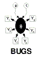

Fun shapes: general constraints
These toy examples illustrate how to implement general inequality constraints. They generate points uniformly over a restricted region of the square with corners at (1, 1) and (-1, -1). A dummy bernoulli variable is introduced and its corresponding proportion set to the step function of the required constraint. The only useful example is the parallelagram where x + y is constrained to be less than or equal to one, this idea can be used to model proportions for binary data instead of say logistic regression.
Circle
model
{
x ~ dunif(-1, 1)
y ~ dunif(-1, 1)
O <- 0
O ~ dbern(constraint)
constraint <- step(x * x + y * y - 1)
}
Inits
( click to open )